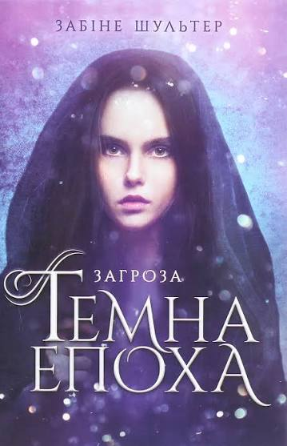

Темна епоха. Загроза
Опис
Ліз вимушена переїхати до столиці. Вона сподівається на краще. Однак уже перша зустріч із новим сусідом обертається невдачею. Зухвалий сусід, маючи норовливий характер, не готовий миритися з новою галасливою сусідкою. Але перше враження найчастіше буває оманливим, і їхні почуття стрімко набирають обертів. Та яке майбутнє може бути між звичайною дівчиною та Воїном? Невже їхнє кохання приречене?
Відгук автора сайту
«Захопливий початок історії, який одразу занурює у похмурий, але деталізований світ з неймовірною атмосферою. Сюжет інтригує з перших сторінок і змушує щиро співпереживати головним героям.»